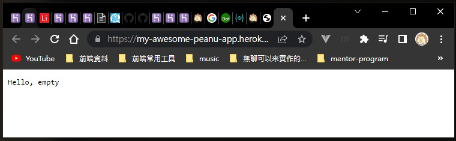
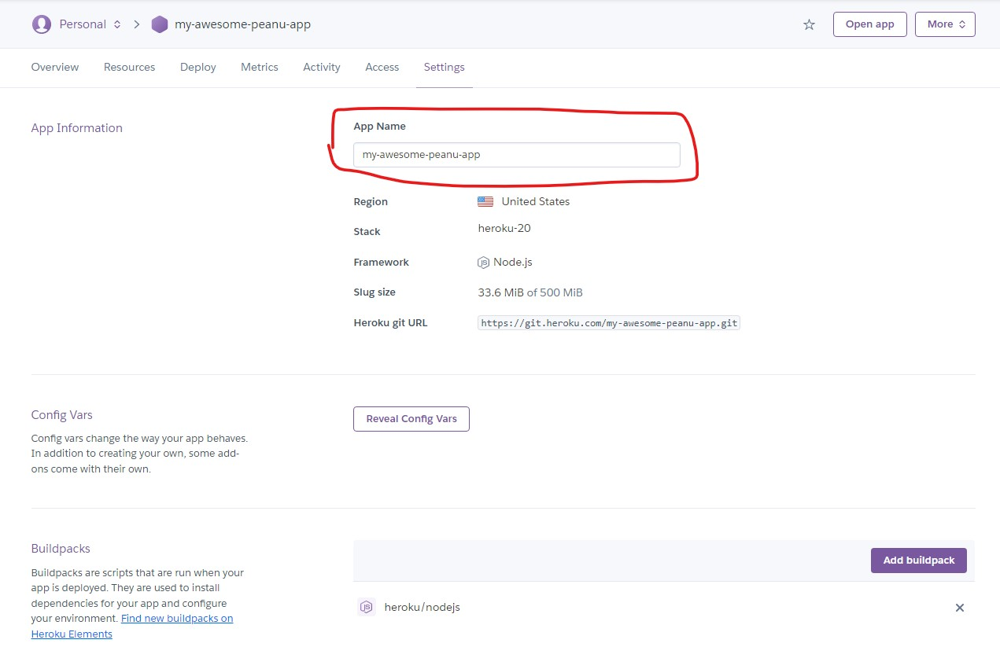

簡單做個筆記。
懶人包
詳細可以參考這幾個官方文件：
- https://devcenter.heroku.com/articles/deploying-nodejs Node.js 的部署方式
- https://devcenter.heroku.com/articles/cleardb cleardb 的相關文件
- https://devcenter.heroku.com/articles/procfile Procfile 的設定方式
接著是一些 Heroku 的小知識：
- 預設只有
master和main分支會自動部署（應該） - 可以在 Heroku 上設置環境變數，再讓 Node.js 取得
- 「Dyno」 是 Heroku 用來表示一個 APP 的用語
- 有自動休眠機制，一段時間沒存取 APP 的話就會先關起來，這樣可以停止計算時數。
大致流程
- 對專案建立 git 版控
- 建立一個 Heroku app
- push 到 Heroku 的遠端 repository
其他注意事項
- 設定環境變數：port 或 db 相關參數設定
- 設定
npm run start的指令（Heroku 預設跑這個，不然就要另外寫 Profile） - 在 package.json 設定
engines（Node.js 版本）
實際走一遍流程
等一下我寫什麼你做什麼，跟著做就對了。
建立專案
1 | mkdir myapp |
初始化 NPM
1 | npm init -y |
寫專案內容
這邊寫一個簡單的範例，只會顯示 Hello + 名稱：
1 | // index.js |
設定 package.json
這邊要做兩件事：
- 設定
npm run start指令（告訴它這個指令要跑什麼） - 設定
engines（告訴它要用哪個 Node.js 版本來跑）
1 | { |
建立 git 版控
記得設定 .gitignore 把不必要的東西拿掉。
1 | git add . |
建立 Heroku 的遠端 repository
heroku create <app名稱> app 名稱可填可不填，沒填的話會自動產生。
1 | heroku create my-awesome-peanu-app |
看到這個就代表建立成功：
1 | # app 網址 | remote repository |
這邊可以用 git remote -v 來做確認：
1 | git remote -v |
把專案 push 上去
1 | git push heroku master |
基本上沒出現 Error log 的話就代表部署成功。接著就可以打開來看了：
1 | heroku open |
這樣就部署完成囉，恭喜恭喜：

附註
關於 debug
如果最後打開網站後發現異常，那就只能靠你自己了，請執行這個指令：
1 | heroku logs |
直接看 log 寫了什麼然後去 debug 吧，通常都會寫得蠻清楚的，加油囉！
修改 App 名稱
可以到 Settings 頁面：

直接改完 Save 就可以了，不過要注意改完後得重新設定 remote 的 repository：
1 | git remote rm heroku |